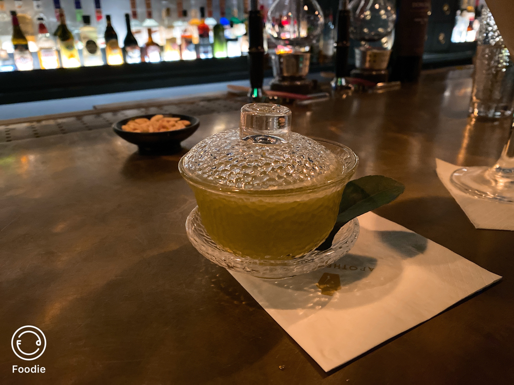

Bar
The locates beside to the west lack, which is the most prominent tourist site in Hangzhou. West Lake Longjing is a native tea that is famous for it fresh taste. The cocktail in the image below is based on West Lake Longjing. Mixing the fragrance of both alcohol and tea, it refreshing your mind with every drink.
